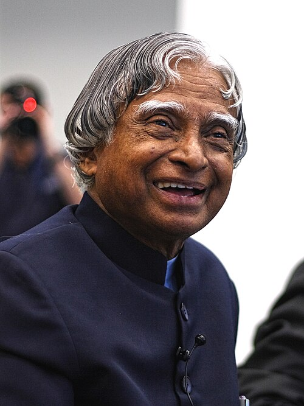

Tribute To Dr. A.P.J Abdul Kalam
About Him
Dr. A. P. J. Abdul Kalam (1931–2015) was an Indian scientist and politician. He served as the 11th president of India from 2002 to 2007. Kalam was a leading figure in India's space program and missile development, earning him the nickname "Missile Man of India". He also played a role in India's nuclear tests. Known for his down-to-earth personality, Kalam was popular with the public and is remembered as the "People's President". After his presidency, he continued to inspire people through education and writing. He died in 2015 at the age of 83.
Kalam was elected as the president of India in 2002 with the support of both the ruling Bharatiya Janata Party and the then-opposition Indian National Congress. He was widely referred to as the "People's President". He engaged in teaching, writing and public service after his presidency. He was a recipient of several awards, including the Bharat Ratna, India's highest civilian honour.